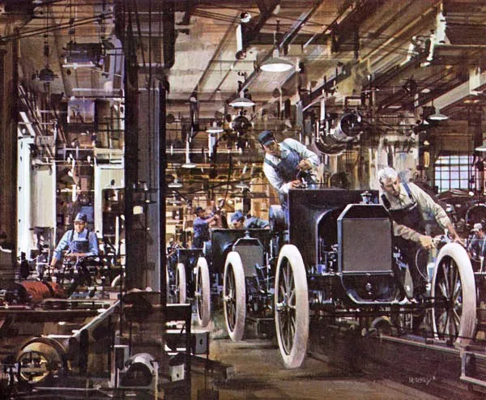
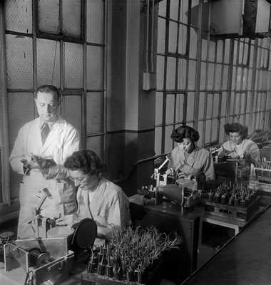
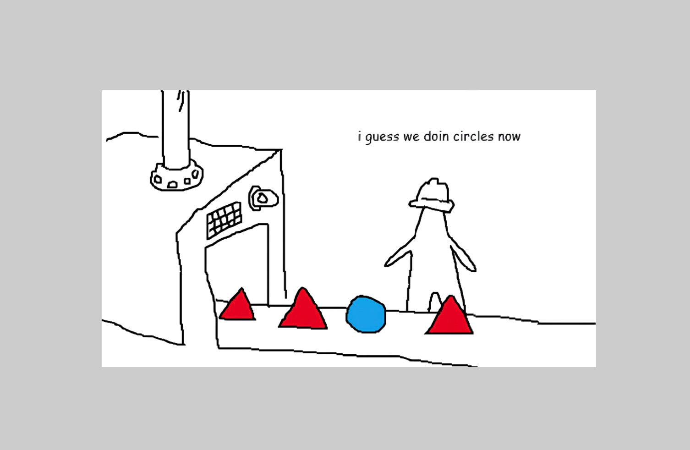
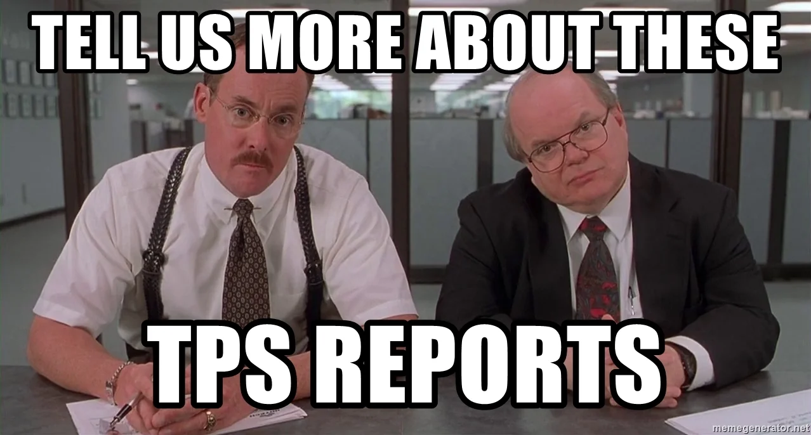
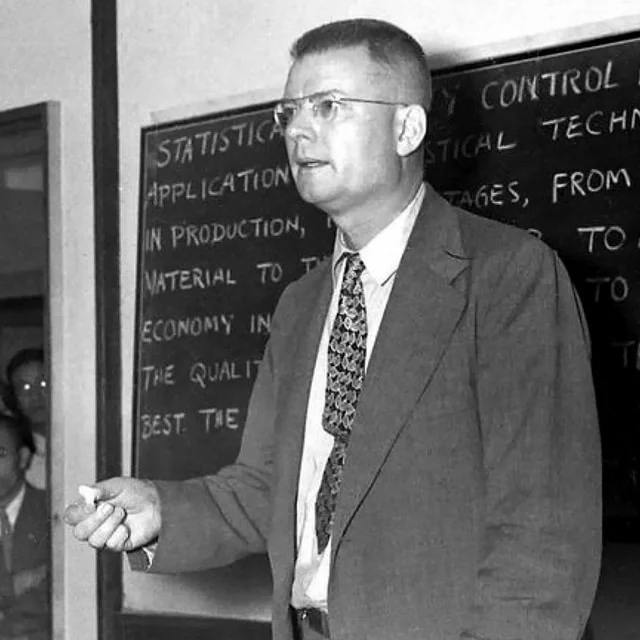
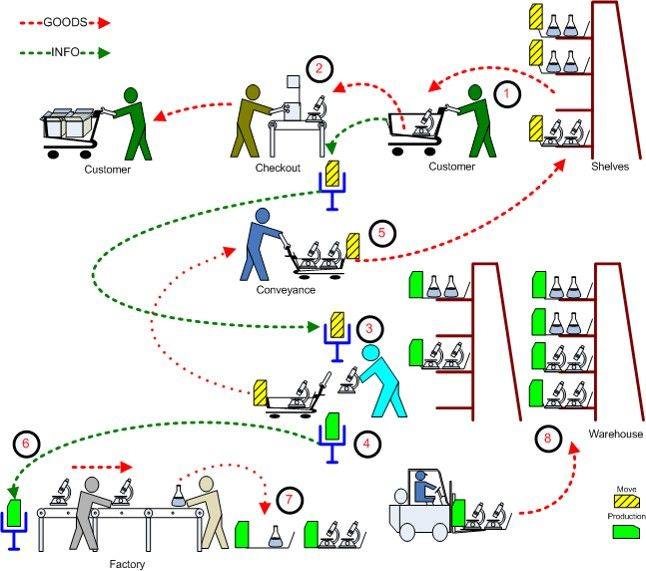
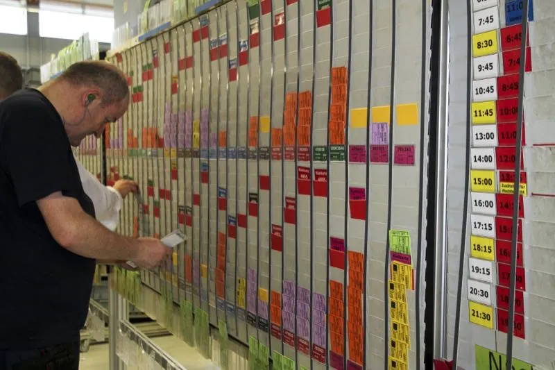
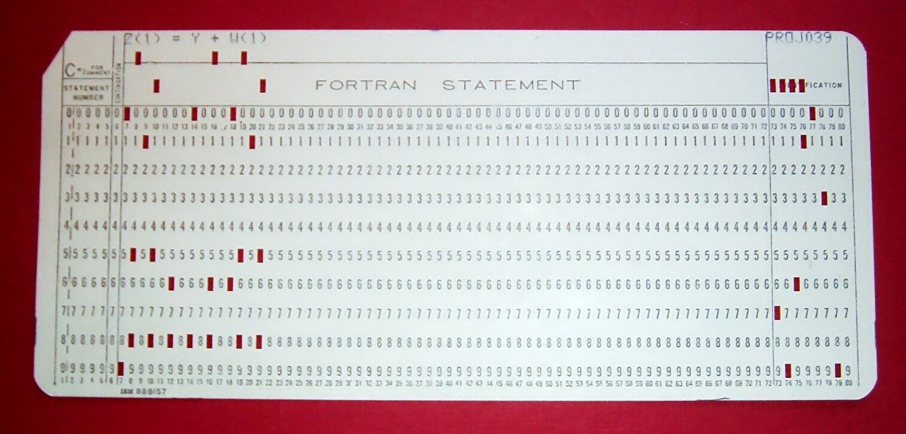
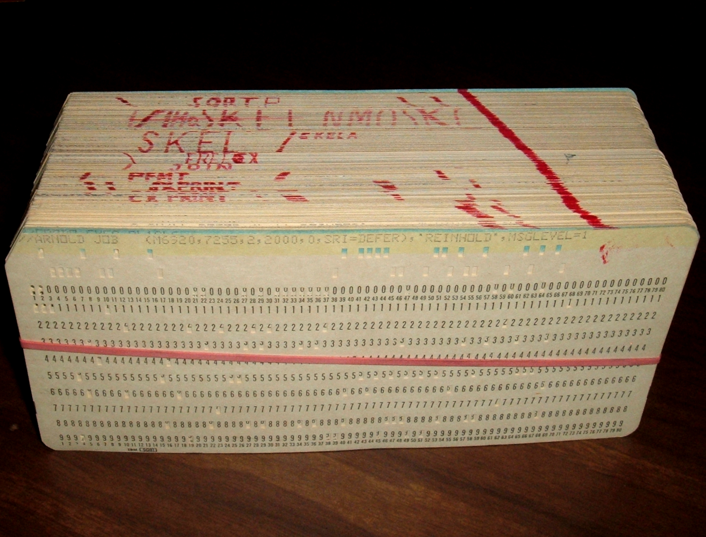

The Oldsmobile Curved Dash, the best selling car before the Ford Model T. These were "mass manufactured" by hand.

These cost the equivalent of $22k USD
The Ford Model T.

These evenutally cost the equivalent of $4.5k USD
How?
The Assembly Line

Products move through discrete steps
assemble chasis -> install suspension -> install engine -> add body -> add wheels
Scientific Management
Focus on maximizing worker efficiency
Time and Motion Studies

- Each worker should have a clearly defined task
- Each worker should be given standard tools
- Managers Monitor and Evaluate Changes
- Managers improves processes
Problems In Early Industry
- inflexible

Problems In Early Industry
- inflexible
- long lead times
- high efficiency leads to inventory of WIP
- dependent on forecasting sales
- overproduction and excess inventory
- defects discovered late
- worker disempowerment
Toyota Production System
AKA TPS


W. Edwards Deming
Taiichi Ohno
W. Edwards Deming
- Goes to Japan to help rebuild after the war
- Gives lectures on Statistical Process Control
- SPC: Quality comes from improving the system instead of the workers / machines
Taiichi Ohno
- Head of Toyota
- Uses Deming's ideas to create Toyota Production System


Theory of Constraints
You're only as fast as your bottleneck

Find the Bottleneck
🎯 Drilling is the constraint at 80/hr
Max throughput = 80 units/hour
The Software Story
How does this relate to software?
Bespoke Software
"Handmade" programs.

- Programs were written for specific one off tasks
- Often written for specific machines
- Hard to divide work

Waterfall
Let's pretend this is a factory